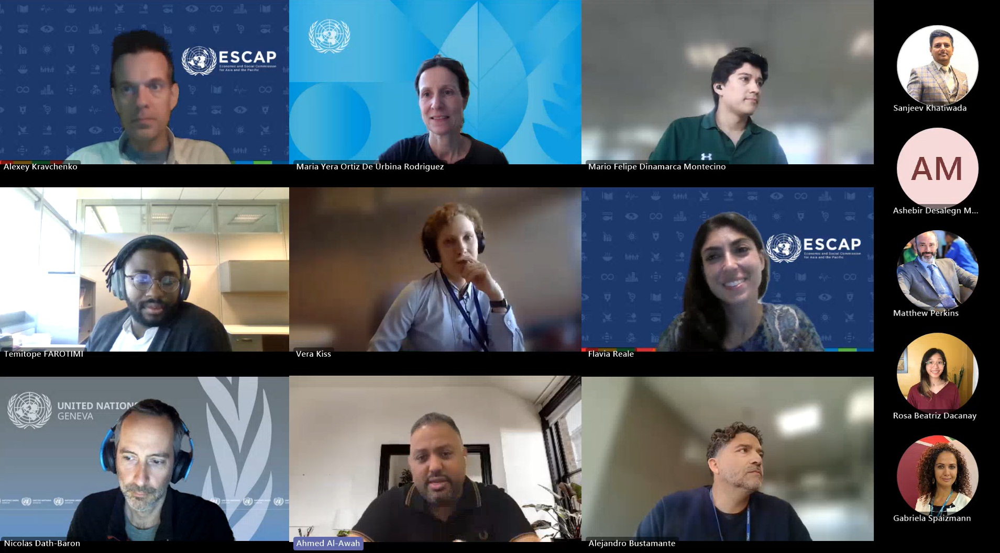
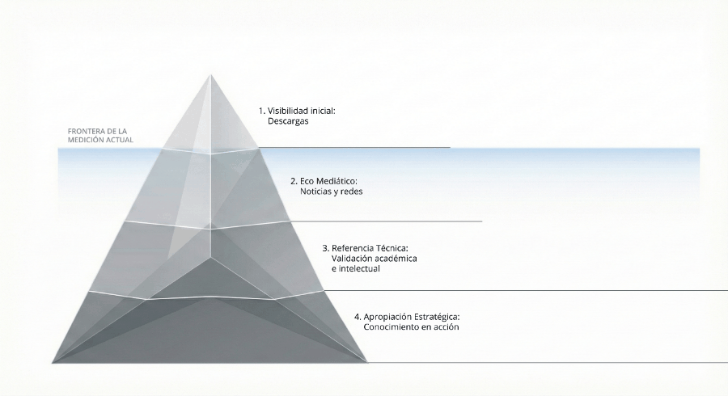
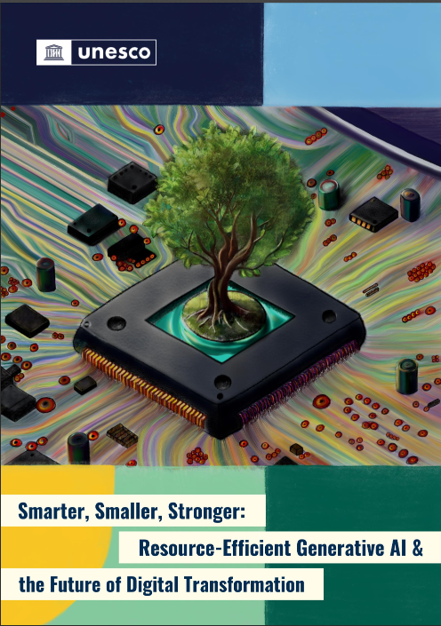
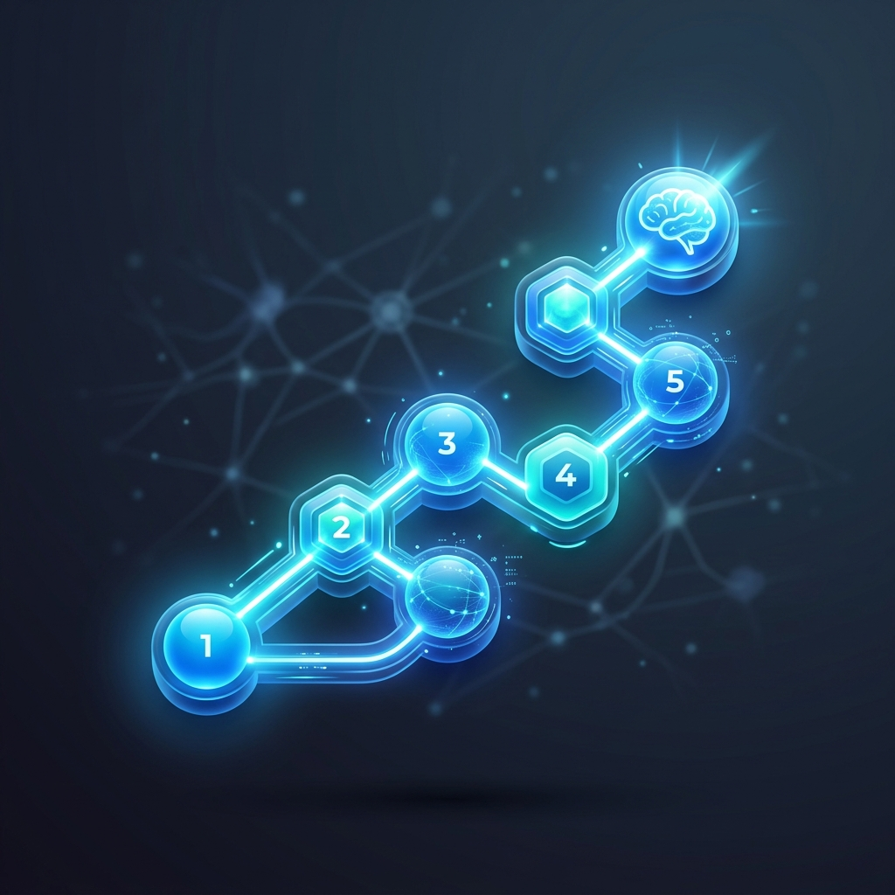

Estrenamos este boletín para mantenerte al tanto de todo lo que sucede en el CEPAL Lab, el espacio de innovación aplicada de la Comisión Económica para América Latina y el Caribe. Cada edición reúne novedades del laboratorio, experimentos en marcha, recomendaciones de lectura y vigilancia tecnológica sobre herramientas, modelos y frameworks relevantes para la comunidad.

Con el propósito de compartir aprendizajes, metodologías y experiencias innovadoras, el equipo del laboratorio
participó en una sesión de intercambio de conocimiento con la red de las comisiones regionales.
En esta instancia, el CEPAL Lab presentó algunos proyectos desarrollados tales como el mapeo estratégico de
publicaciones y el análisis de instrumentos de políticas asistido por IA, caso aplicado a los planes
estratégicos institucionales de la República Dominicana.
En esta actividad de intercambio de conocimiento promovida por ESCAP se conocieron diversas iniciativas tanto de
gestión de la innovación como herramientas practicas que permiten el aprovechamiento de las nuevas tecnologías
para el fortalecimiento de capacidades institucionales. Se espera que esta instancia sea un proceso de
intercambio contínuo en el cual experiencias, soluciones, desafíos o aplicaciones desarrolladas puedan ser
aprovechadas por las distintas comisiones, adaptándolas a sus respectivos contextos regionales.

Utilizando datos de descargas del repositorio institucional de CEPAL, entre 2024 y 2025, y otras fuentes
externas, el laboratorio realizó un análisis exploratorio del consumo de nuestro catálogo, revelando la
estructura de descargas, la resonancia en medios y las citaciones académicas. Los resultados revelan
interesantes hallazgos entre los que destacan un importante volumen de descargas en escalas comparables a
organismos
internacionales de alcance global, una elevada concentración de consultas en un pequeño grupo de publicaciones,
y una
importante demanda de documentos publicados antes de 2015. Los hallazgos preliminares también dan cuenta de
un marcado interés en temas macroeconómicos, documentos de diagnóstico y material de referencia técnica.
El ejercicio sirvió también para identificar potenciales sinergias entre distintas áreas de la Comisión para
potenciar el aprovechamiento de la producción institucional. Además reveló la importancia de que este tipo de
análisis se realice de manera periódica y sistemática, para lo cual se recomienda un sistema de monitoreo
continuo integrado al mapeo estratégico de publicaciones.
En el siguiente enlace puedes explorar la presentación y el prototipo de un dashboard interactivo que brinda
mayor información
sobre el 1% de las publicaciones más descargadas.

Las oportunidades que ofrece la IA como potencial catalizador del cambio en múltiples ámbitos del desarrollo pueden verse opacadas por la elevada demanda computacional necesaria para su funcionamiento y la presión que esto ejerce sobre los recursos energéticos e hídricos. Los modelos pequeños, abiertos y eficientes podrían ser una alternativa para abordar estos desafíos. En este documento, la UNESCO explora a través de casos prácticos como estos modelos pueden contribuir a democratizar el acceso a capacidades avanzadas y hacerse cargo a la vez de los riesgos ambientales asociados a su desarrollo y uso.
Los modelos de última generación con capacidades de razonamiento encadenado (chain-of-thought extendido) están redefiniendo los casos de uso para análisis de documentos complejos y síntesis de información. Revisamos qué implica esto para flujos de extracción de conocimiento desde fuentes no estructuradas — un área central del trabajo del laboratorio en 2026 — y cómo esta técnica fue clave para clasificar el corpus de la CEPAL bajo las 11 grandes transformaciones.
